Zanim zaczniesz
Aplikacja jest dodatkiem do Twojego konta NoviCloud. Potrzebujesz włączonego modułu API i hasła API — to nie hasło, którym logujesz się do NoviCloud w przeglądarce.
Nie ma tu osobnego serwera: dane pobierane są wprost z Twojego NoviCloud i zostają na telefonie. Dzięki temu raporty i dokumenty przeglądasz także bez internetu.
Edycja towarów wymaga subskrypcji „API W”, a karty lojalnościowe — modułu PC-Loyalty w NoviCloud.
Zrzuty pochodzą z konta demonstracyjnego, więc kwoty i nazwy towarów są przykładowe.
Pierwsze uruchomienie
Połączenie z kontem robisz raz — potem aplikacja pamięta dane i sama odświeża informacje w tle. Jeśli nie masz jeszcze hasła API, zacznij od pomocy „Jak się zalogować?”, która prowadzi przez ustawienia w NoviCloud.
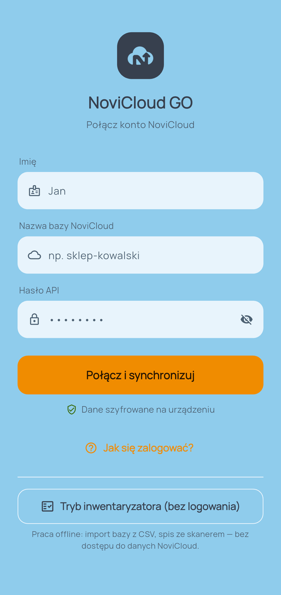
Ekran logowania
- W polu Nazwa bazy NoviCloud wpisz nazwę swojej bazy danych.
- W polu Hasło API wpisz hasło dostępu ustawione w NoviCloud.
- Naciśnij Połącz i synchronizuj — aplikacja pobierze dane i otworzy pulpit.
- Pole Imię jest opcjonalne — służy tylko do powitania na pulpicie.
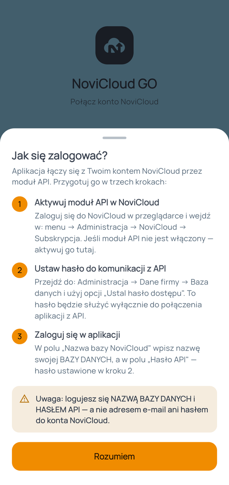
Pomoc: „Jak się zalogować?”
- Jeśli nie wiesz, skąd wziąć hasło API, otwórz Jak się zalogować?.
- Instrukcja prowadzi przez trzy kroki w NoviCloud: włączenie modułu API, ustawienie hasła dostępu i zalogowanie w aplikacji.
- Dane logowania są szyfrowane i zostają wyłącznie na Twoim telefonie.
Praca bez logowania — tryb inwentaryzatora
Tryb inwentaryzatora służy do spisu z natury (remanentu) na urządzeniu, które nie ma dostępu do NoviCloud — na przykład na telefonie pracownika w magazynie. Działa offline: wczytujesz bazę towarów z pliku CSV, zliczasz towar skanerem, a wynik eksportujesz.
Pusty arkusz spisu
- Wejście: przycisk Tryb inwentaryzatora na ekranie logowania.
- U góry liczniki arkusza: liczba pozycji, ilość oraz wartość netto i brutto.
- Pozycje dodajesz na trzy sposoby: Skanuj (czytnik kodów), Z bazy (wybór z wczytanej listy) lub Nowy (ręcznie).
Menu trybu
- Wczytaj bazę towarów (CSV) — wczytuje listę towarów, żeby skaner rozpoznawał kody i podpowiadał nazwy oraz ceny.
- Wyjdź z trybu inwentaryzatora — powrót do logowania do NoviCloud.
- Ikony u góry ekranu to import pliku, eksport arkusza (CSV / XLSX / PDF) i to menu.
Ostrzeżenie przy wyjściu
- Wyjście z trybu trwale usuwa wczytaną bazę i bieżący arkusz — dlatego aplikacja prosi o potwierdzenie.
- Zanim wyjdziesz, wyeksportuj arkusz, jeśli spis nie jest skończony.
Pulpit — codzienny rzut oka
Pulpit to pierwszy ekran po zalogowaniu. Pokazuje sprzedaż za wybrany okres, wykres i kafelki szybkich akcji, które możesz ustawić pod siebie.

Widok główny
- Karta na górze: utarg brutto za wybrany okres, obok wartość netto i marża.
- Zielona pigułka Aktualne informuje, że dane w telefonie są świeże.
- Szybkie akcje to skróty do najczęściej używanych funkcji — przesuń w bok, aby zobaczyć kolejne, przytrzymaj kafelek, aby go zmienić.
- Wykres pod kafelkami pokazuje sprzedaż w czasie; ikony nad nim przełączają słupki, linię i obszar.
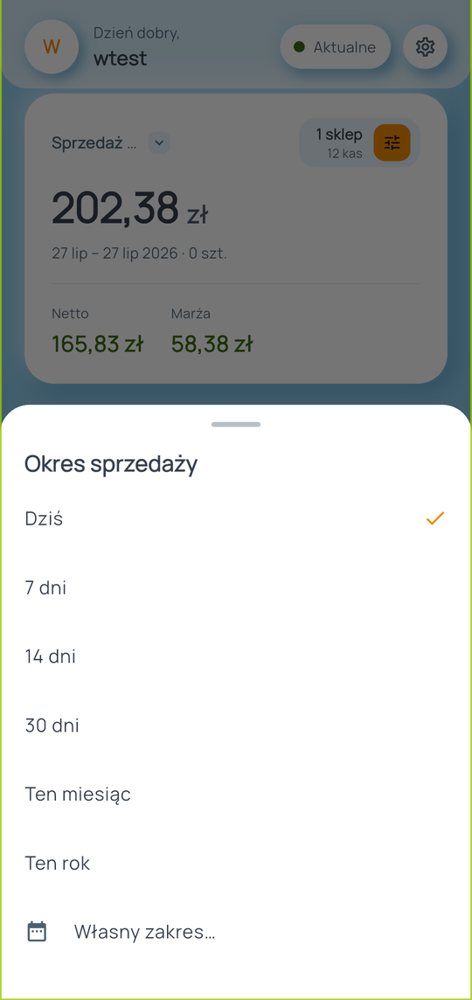
Wybór okresu
- Dotknij napisu Sprzedaż · … u góry karty.
- Wybierz okres: Dziś, 7 dni, 14 dni, ten miesiąc, ten rok lub własny zakres dat.
- Wybrany okres dotyczy kwoty na karcie i wykresu.
Zakres analizy — sklepy i kasy
- Pigułka „1 sklep / 12 kas” otwiera zakres analizy.
- Zaznacz, które sklepy i kasy mają być liczone — przydatne, gdy prowadzisz więcej niż jeden punkt.
- Zakres obowiązuje kwotę na pulpicie, wykres i widget na ekranie głównym telefonu.
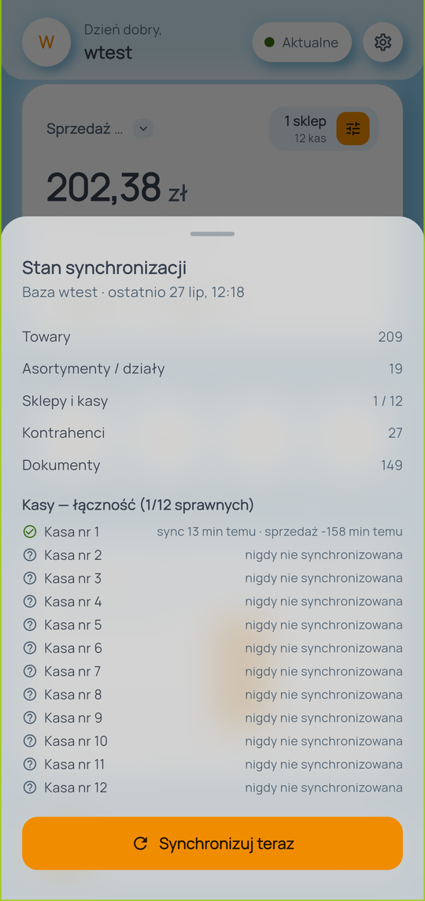
Stan synchronizacji
- Dotknij pigułki stanu, aby zobaczyć, kiedy ostatnio pobrano dane i ile czego jest w telefonie (towary, dokumenty, kasy).
- Stąd uruchamiasz też ręczne odświeżenie, jeśli nie chcesz czekać na automatyczne.
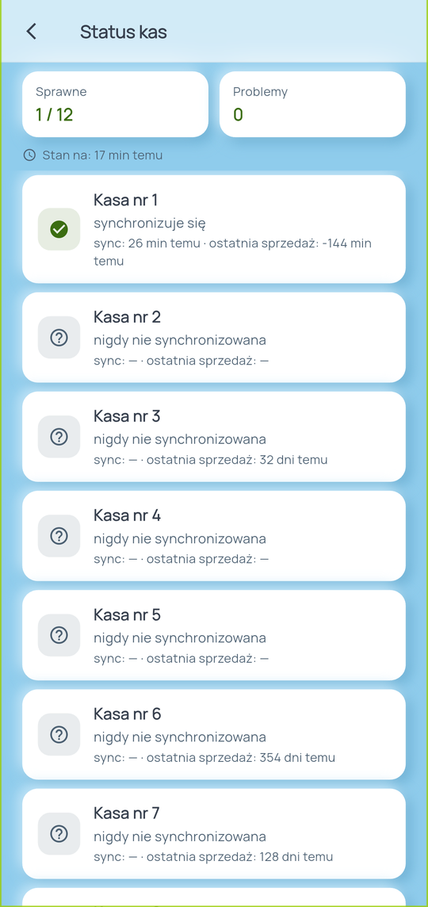
Status kas
- Kafelek Status kas pokazuje, czy kasy komunikują się z chmurą.
- Zielona kropka to kasa, która synchronizuje się normalnie; żółta i czerwona oznaczają rosnące opóźnienie.
- Progi ostrzeżeń ustawisz w Ustawieniach → Progi alarmów kas.
Raporty
Zakładka Raporty to spis wszystkich zestawień. Każdy raport ma wybór okresu, a większość także filtry i eksport do PDF lub CSV.
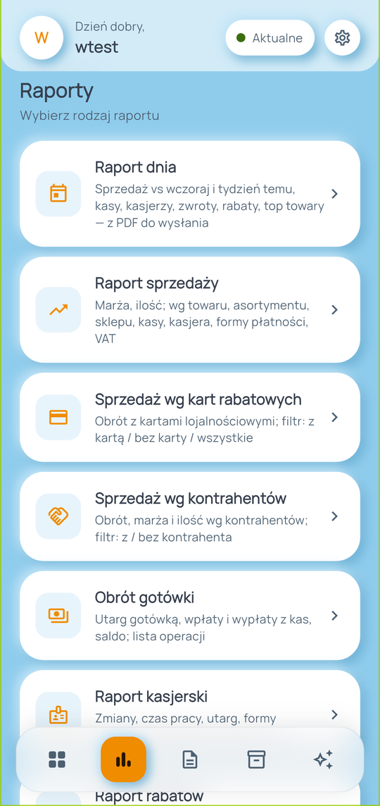
Lista raportów
- Na górze Raport dnia — najszybsza odpowiedź na pytanie „co się dzisiaj stało”.
- Niżej raporty szczegółowe: sprzedaży, wg kart rabatowych, wg kontrahentów, kasjerski, obrót gotówki.
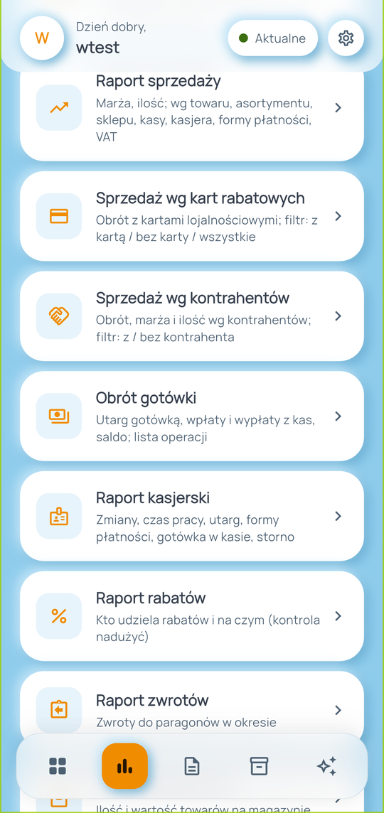
Dalsze raporty
- Po przewinięciu: raport rabatów, zwrotów, stany magazynowe i sprzedaż opakowań.
- Każda pozycja ma opis, więc nie musisz zgadywać, co zawiera.

Raport dnia
- Sprzedaż dnia, liczba dokumentów i średni paragon w jednym miejscu.
- Dwa porównania: z wczoraj i z tym samym dniem tygodnia — drugie jest miarodajniejsze w handlu (weekend do weekendu).
- Sekcja Warto sprawdzić pojawia się, gdy któryś kasjer odstaje od pozostałych rabatami, zwrotami lub anulowanymi paragonami.
- Ikona kalendarza zmienia dzień, ikona udostępniania tworzy PDF do wysłania.
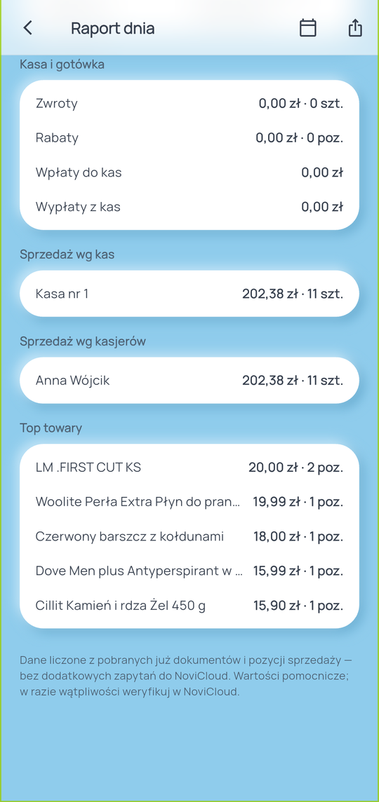
Raport dnia — dalsza część
- Sprzedaż wg kas i wg kasjerów pokazuje, gdzie i przez kogo powstał utarg.
- Top towary to najlepiej sprzedające się pozycje dnia.
- Cały raport liczy się z danych już pobranych na telefon — działa też bez internetu.
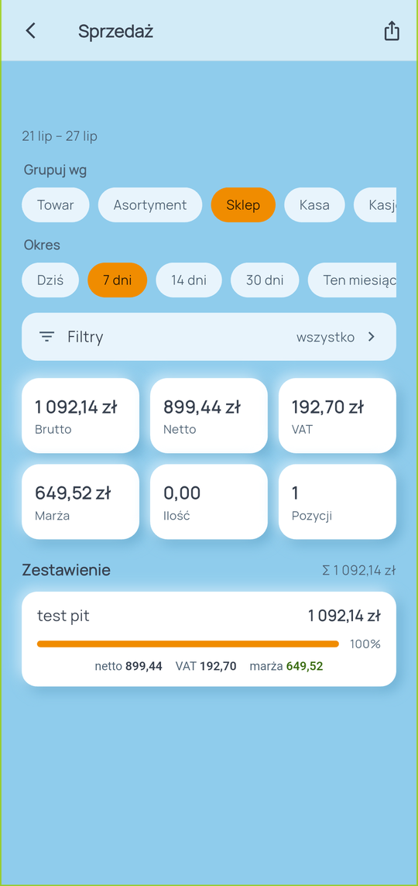
Raport sprzedaży
- Najbardziej rozbudowane zestawienie. Wybierz grupowanie (towar, asortyment, sklep, kasa, kasjer, forma płatności, VAT) i okres.
- Każdy wiersz ma kwotę i udział procentowy w całości.
- Ikona u góry eksportuje wynik do PDF lub CSV — z uwzględnieniem filtrów.
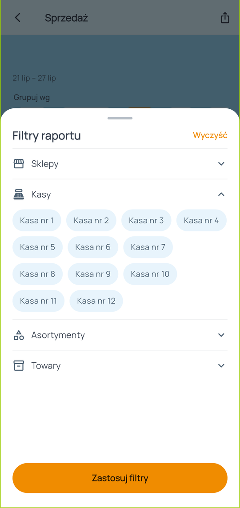
Filtry raportu
- Przycisk Filtry otwiera drzewko: sklepy, kasy, asortymenty i towary.
- Sekcje rozwijasz dotknięciem; w towarach jest wyszukiwarka.
- Filtry obowiązują zarówno wyniki na ekranie, jak i eksport.

Raport kasjerski
- Praca obsługi: utarg, czas pracy, liczba paragonów i faktur, storna i anulowane.
- Przełącznik u góry zmienia analizę na kasjerów, kasy lub sklepy.
- Wiersz zmiany rozwiniesz, aby zobaczyć formy płatności oraz wpłaty i wypłaty gotówki.
Dokumenty
Podgląd wystawionych dokumentów — paragonów, faktur, korekt, przyjęć i wydań. Dokumenty są przeglądane z pamięci telefonu, więc lista działa też bez sieci.
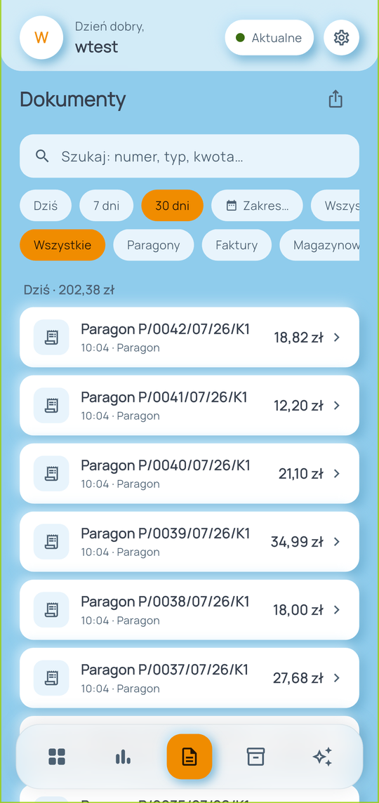
Lista dokumentów
- Szukaj po numerze, typie lub kwocie; zawężaj okres i typ dokumentu.
- Nagłówki dni pokazują sumę sprzedaży danego dnia.
- Lista doczytuje się w miarę przewijania — nie trzeba czekać na wszystko naraz.
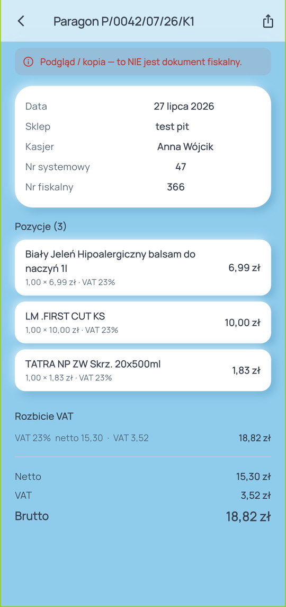
Szczegóły dokumentu
- Dotknij wiersza, aby zobaczyć pozycje, rozbicie VAT i formy płatności.
- U góry jest wyraźna informacja, że to podgląd, a nie dokument fiskalny.
- Dokument możesz wyeksportować do PDF (kopia do wysłania).
Towary i skaner
Katalog towarów z Twojego NoviCloud wraz z cenami i stanami, plus skaner kodów kreskowych do szybkiego sprawdzania towaru.
Katalog towarów
- Szukaj po nazwie lub kodzie; filtruj po statusie (aktywne / nieaktywne) i dziale.
- Menu „⋯” u góry daje dostęp do pliku magazynowego, etykiet cenowych i eksportów.
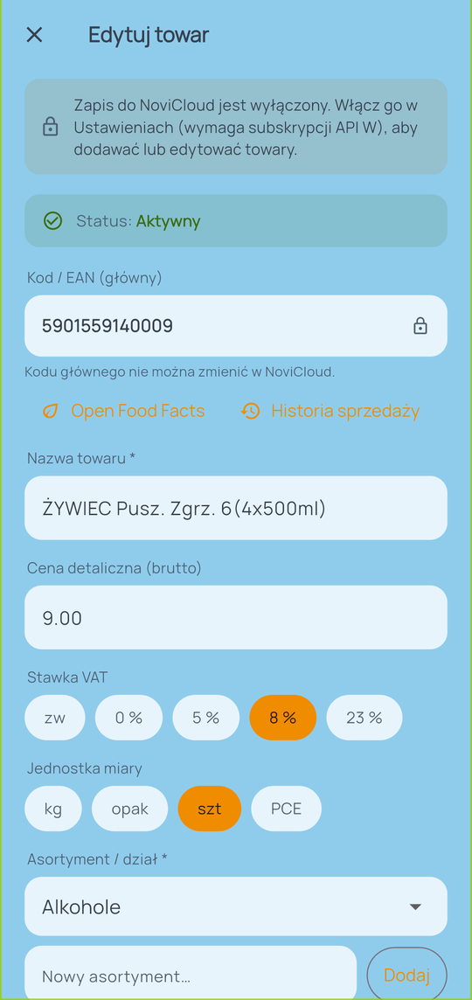
Karta towaru
- Cena detaliczna, stawka VAT, jednostka miary, dział i kod EAN.
- Skróty prowadzą do historii sprzedaży towaru i informacji o produkcie.
- Edycja i dodawanie towarów wymaga włączonego zapisu do NoviCloud (subskrypcja „API W”).
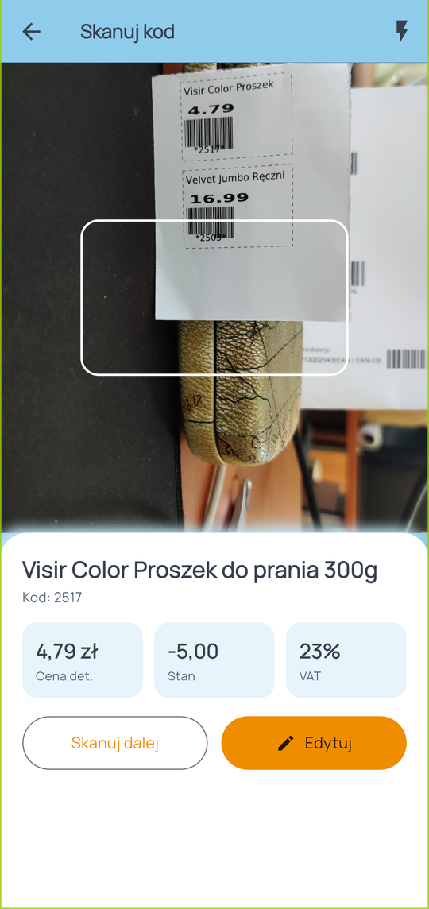
Skaner kodów
- Skieruj telefon na kod kreskowy — aplikacja od razu pokaże nazwę, cenę, stan i VAT.
- Skanuj dalej pozwala sprawdzać kolejne towary bez wychodzenia z ekranu.
- Ikona błyskawicy u góry włącza doświetlenie.
Doradca AI
Podpowiedzi liczone na telefonie — bez wysyłania danych na zewnątrz i bez dodatkowych opłat. Opcjonalnie możesz włączyć czat, który wymaga własnego darmowego klucza Google Gemini.

Na dziś i prognozy
- Karta Na dziś daje prognozę sprzedaży i ostrzega, gdy trend spada.
- Każda liczba ma rozwijane „Dlaczego?” z pełnym wyliczeniem — zamiast wierzyć na słowo, możesz sprawdzić, skąd się wzięła.
- Alerty zwracają uwagę na sytuacje wymagające reakcji.
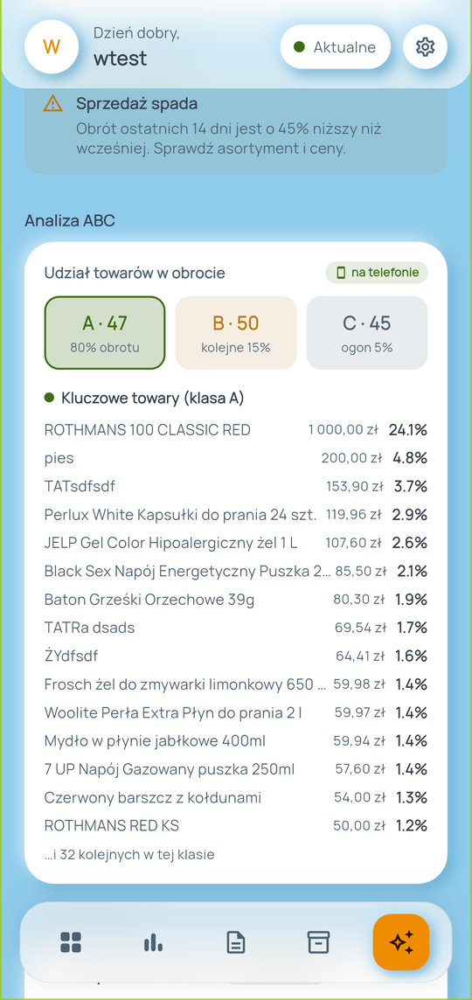
Analiza ABC
- Towary podzielone według udziału w obrocie: klasa A daje 80% obrotu, B kolejne 15%, C resztę.
- Praktyczny wniosek: klasy A pilnuj najbardziej — jej brak na półce boli najszybciej.
- Niżej znajdziesz sugestie zamówień z zapasem bezpieczeństwa.
Ustawienia i powiadomienia
Ustawienia otwierasz kołem zębatym na pulpicie. Znajdziesz tu bezpieczeństwo, wygląd, powiadomienia, informacje o danych w telefonie i pomoc.
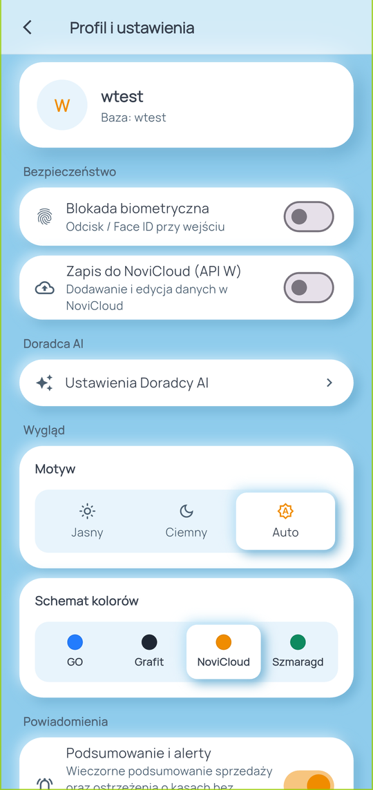
Profil i ustawienia
- Blokada biometryczna — odcisk palca lub Face ID przy wejściu do aplikacji.
- Zapis do NoviCloud — włącz, jeśli masz subskrypcję „API W” i chcesz edytować towary z telefonu.
- Sekcja Konto i dane pokazuje, ile danych jest w telefonie i kiedy była ostatnia synchronizacja.
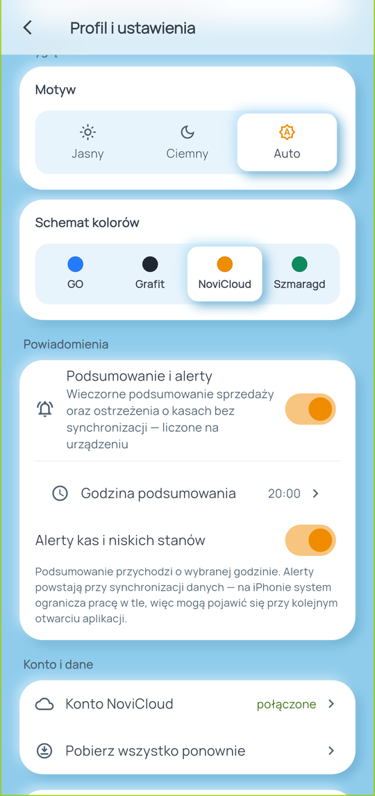
Wygląd i powiadomienia
- Motyw jasny, ciemny lub systemowy oraz schemat kolorów do wyboru.
- Podsumowanie i alerty — wieczorne podsumowanie sprzedaży o wybranej godzinie oraz ostrzeżenia o kasach bez synchronizacji.
- Powiadomienia powstają w telefonie — nic nie jest wysyłane na zewnątrz, żeby się pojawiły.